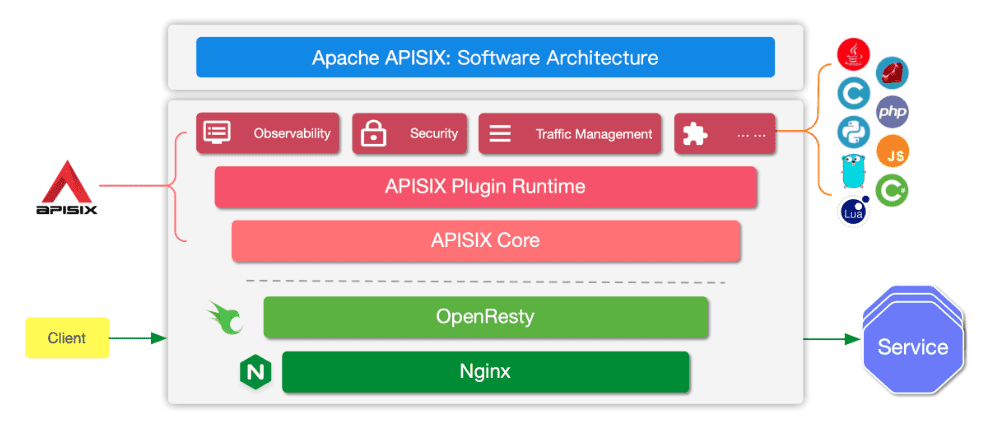
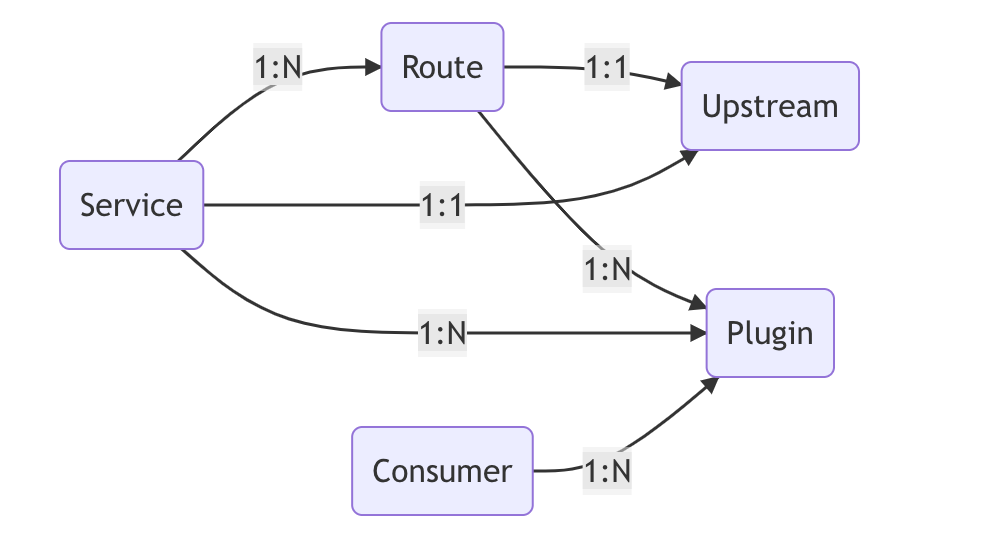
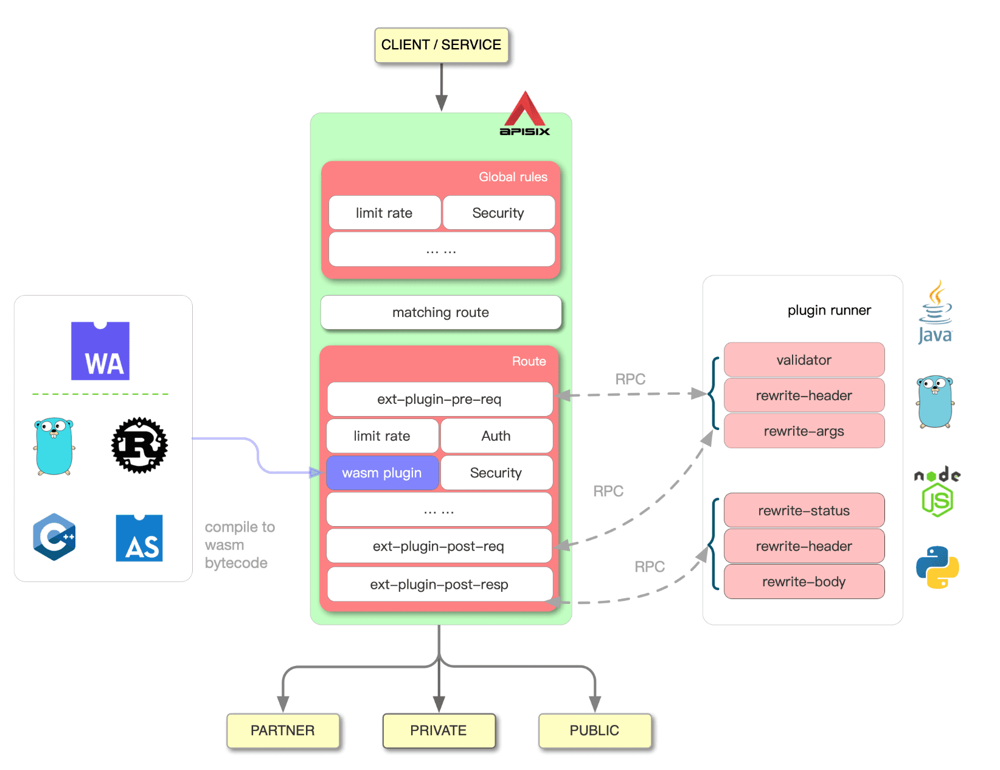

Apache APISIX 是什么？
Apache APISIX是 Apache 软件基金会下的云原生 API 网关，它兼具动态、实时、高性能等特点，提供了负载均衡、动态上游、灰度发布（金丝雀发布）、服务熔断、身份认证、可观测性等丰富的流量管理功能。- 我们可以使用
Apache APISIX来处理传统的南北向流量，也可以处理服务间的东西向流量。同时，它也支持作为 K8s Ingress Controller 来使用。
主要特性
- 多平台支持：APISIX 提供了多平台解决方案，它不但支持裸机运行，也支持在 Kubernetes 中使用，还支持与 AWS Lambda、Azure Function、Lua 函数和 Apache OpenWhisk 等云服务集成。
- 多协议支持：支持TCP/UDP 代理、Dubbo 代理、动态 MQTT 代理、gRPC 代理、Websocket 代理、HTTP(S) 反向代理及动态加载 SSL 证书等多种协议。
- 全动态能力：APISIX 支持热加载，这意味着你不需要重启服务就可以更新 APISIX 的配置。请访问为什么 Apache APISIX 选择 Nginx + Lua 这个技术栈？以了解实现原理。
- 精细化路由：APISIX 支持使用 NGINX 内置变量做为路由的匹配条件，你可以自定义匹配函数来过滤请求，匹配路由。
- 安全防护：丰富的认证、鉴权支持，支持外部的身份认证平台，比如 Auth0，Okta，Authing 等，内置策略，无需配置即可抵御 ReDoS。
- 运维友好：APISIX 支持与以下工具和平台集成，通过 APISIX Dashboard，运维人员可以通过友好且直观的 UI 配置 APISIX。
- 高度可扩展：支持自定义插件，插件可以用 Java/Go/Python 编写，支持自定义负载均衡算法和自定义路由。
- 多语言插件支持：APISIX 支持多种开发语言进行插件开发，开发人员可以选择擅长语言的 SDK 开发自定义插件。
- Serverless：
- Lua functions：能在 APISIX 每个阶段调用 lua 函数。
- Azure functions：能无缝整合进 Azure Serverless Function 中。作为动态上游，能将特定的 URI 请求全部代理到微软 Azure 云中。
- Apache OpenWhisk：与 Apache OpenWhisk 集成。作为动态上游，能将特定的 URI 请求代理到你自己的 OpenWhisk 集群。
APISIX架构
总体架构

技术架构

部署架构
- 下图中的三种形态都允许用户去部署：Admin、Gateway、Gateway+Admin。
- APISIX的解决方案首先是 All In One，即只有一个 “Gateway+Admin” 的包，当用户需要将 Gateway 和 Admin 分别部署时，只需修改配置，是否启用 Admin 就可以实现。

APISIX安装
APISIX对象
对象
- Route：通过路由定义规则来匹配客户端请求，根据匹配结果加载并执行相应的插件，最后把请求转发给到指定的上游应用。
- Service：是某类 API 的抽象（也可以理解为一组 Route 的抽象）。它通常与上游服务抽象是一一对应的，但与路由之间，通常是 1:N 即一对多的关系。
- Upstream：是对虚拟主机抽象，即应用层服务或节点的抽象。你可以通过 Upstream 对象对多个服务节点按照配置规则进行负载均衡。
- Consumer：是某类服务的消费者，需要与用户认证配合才可以使用。当不同的消费者请求同一个 API 时，APISIX 会根据当前请求的用户信息，对应不同的 Plugin 或 Upstream 配置。
- Global Rule：如果你需要一个能作用于所有请求的 Plugin，可以通过 Global Rules 启用一个全局的插件配置。
- Plugin：表示将在 HTTP 请求/响应生命周期期间执行的插件配置。Plugin 的配置信息可以直接绑定在 Route 上，也可以被绑定在 Service、Consumer 或 Plugin Config 上。
- Plugin Config：在很多情况下，我们在不同的路由中会使用相同的插件规则，此时就可以通过 Plugin Config 来设置这些规则。Plugin Config 属于一组通用插件配置的抽象。
数据模型

插件优先级
- 对于同一个插件的配置，只能有一个是有效的，其插件配置优先级为：Consumer > Route > Plugin Config > Service
APISIX配置
- 静态配置：仅在程序启动时生效，若修改后需要重启
- 永远不要手工修改
conf/config-default.yaml文件，该文件是与 APISIX 源码强绑定。如果需要自定义任何配置，都应在config.yaml文件中完成。 - 当服务每次启动时，apisix 会根据
conf/config.yaml配置和模板apisix/cli/ngx_tpl.lua自动生成新的conf/nginx.conf并自动启动服务。
- 永远不要手工修改
- 动态配置：可在程序执行过程中动态加载，修改配置后不需要重启，可以热加载，分为：”Stand-alone”管理模式和etcd配置中心管理模式
- Stand-alone模式：即本地存储方式：
conf/apisix.yaml - etcd配置中心管理模式：即路由配置通过Admin API持久化在etcd中
- Stand-alone模式：即本地存储方式：
插件扩展
External Plugin
配置自定义lua插件
- 将自定义lua插件放到
/usr/local/apisix/apisix/plugins目录，插件开发参考apisix插件开发官方文档 - 修改
/usr/local/apisix/conf/config.yaml配置，在plugins节点下启用自定义lua插件，并重启apisix服务service apisix restart - 导出apisix插件
schema配置：curl http://127.0.0.1:9090/v1/schema > schema.json如果导出命令报错，参考官方文档配置
- 将
schema.json上传到/usr/local/apisix-dashboard/conf路径下，注意先备份原schema.json配置 - 重启
apisix-dashboard
挂载开源热门lua插件
- 将现有lua插件放到
/usr/local/apisix/deps/share/lua/5.1目录 - 例如挂载lua-resty-cookie插件，自定义lua脚本引用如下：
1
local cookie = require("resty.cookie")
- 如果挂载多个相同功能的lua插件，则按照以下路径优先配置的插件优先生效
1
lua_package_path "$prefix/deps/share/lua/5.1/?.lua;$prefix/deps/share/lua/5.1/?/init.lua;/usr/local/apisix/?.lua;/usr/local/apisix/?/init.lua;;/usr/local/apisix/?.lua;./?.lua;/usr/local/openresty/luajit/share/luajit-2.1.0-beta3/?.lua;/usr/local/share/lua/5.1/?.lua;/usr/local/share/lua/5.1/?/init.lua;/usr/local/openresty/luajit/share/lua/5.1/?.lua;/usr/local/openresty/luajit/share/lua/5.1/?/init.lua;;";
Plugin Runner

- 当你在 APISIX 中配置了一个 Plugin Runner ，APISIX 将以子进程的方式运行该 Plugin Runner 。
- 该子进程与 APISIX 进程从属相同用户。当重启或者重新加载 APISIX 时，该 Plugin Runner 也将被重启。
- 一旦你为指定路由配置了 ext-plugin-* 插件， 匹配该路由的请求将触发从 APISIX 到 Plugin Runner 的 RPC 调用。
- 支持的 Plugin Runner
参考文档

...
...
00:00
00:00
If you like this blog or find it useful for you, you are welcome to comment on it. You are also welcome to share this blog, so that more people can participate in it. If the images used in the blog infringe your copyright, please contact the author to delete them. Thank you !